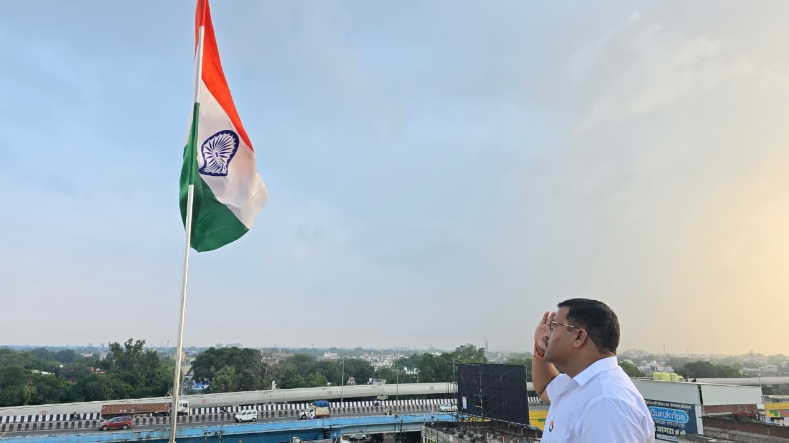

OFFICIAL WEBSITE · राष्ट्र प्रथम
Santosh Sikarwar (संतोष सिकरवार)
जिला उपाध्यक्ष, भारतीय जनता पार्टी, आगरा
"सेवा ही संकल्प, संगठन ही शक्ति"

परिचय
संतोष सिकरवार भारतीय जनता पार्टी के समर्पित एवं परिश्रमी कार्यकर्ता हैं, जो वर्तमान में जिला उपाध्यक्ष, भारतीय जनता पार्टी, आगरा के रूप में अपना दायित्व निभा रहे हैं। एक सामान्य कार्यकर्ता के रूप में आरंभ कर, वर्षों से संगठन, सेवा और समर्पण के पथ पर निरंतर अग्रसर रहते हुए उन्होंने पार्टी और समाज की निःस्वार्थ सेवा की है।
किसान मोर्चा में जिला उपाध्यक्ष, जिला अध्यक्ष, प्रदेश कार्यसमिति सदस्य एवं ब्रज क्षेत्र के क्षेत्रीय उपाध्यक्ष जैसे अनेक दायित्वों का निर्वहन करते हुए उन्होंने संगठन को ज़मीनी स्तर पर सुदृढ़ करने में महत्वपूर्ण भूमिका निभाई है। किसानों, युवाओं एवं आम जनता के मुद्दों को निरंतर मुखरता से उठाना उनकी कार्यशैली की पहचान रही है।
उनका पूरा राजनीतिक जीवन "राष्ट्र प्रथम, संगठन सर्वोपरि" की भावना को समर्पित रहा है। सेवा को संकल्प और संगठन को शक्ति मानते हुए वे आज भी उसी निष्ठा एवं ऊर्जा के साथ जनसेवा में सक्रिय हैं।
जीवन परिचय
यह संतोष सिकरवार की आधिकारिक व्यक्तिगत वेबसाइट है। (This is the official personal website of Santosh Sikarwar. It is not the official website of the Bharatiya Janata Party.)
राजनीतिक यात्रा
संगठन से समर्पण तक
सार्वजनिक जीवन की शुरुआत
दैनिक यात्री संघ के अध्यक्ष रहते हुए रायभा रेलवे चक्का जाम (15,000 लोग) एवं रायभा से आगरा कमिश्नरी तक पैदल मार्च (3,000 लोग)। वर्ष 2009 में भाजपा की सदस्यता ग्रहण।
सह चुनाव कार्यालय प्रभारी
लोकसभा फतेहपुर सीकरी
संगठन के कार्य
भारतीय जनता पार्टी, आगरा
जिला उपाध्यक्ष
भारतीय जनता पार्टी किसान मोर्चा, आगरा
जिला अध्यक्ष
भारतीय जनता पार्टी किसान मोर्चा, आगरा
प्रदेश कार्यसमिति सदस्य
भारतीय जनता पार्टी किसान मोर्चा, उत्तर प्रदेश
क्षेत्रीय उपाध्यक्ष
भारतीय जनता पार्टी किसान मोर्चा, ब्रज क्षेत्र
जिला उपाध्यक्ष
भारतीय जनता पार्टी, आगरा

समाचार एवं गतिविधियाँ
नवीनतम अपडेट

पारंपरिक उद्यमों से उत्तर प्रदेश का समग्र विकास: संतोष सिकरवार
भारतीय जनता पार्टी के आगरा जिला उपाध्यक्ष श्री संतोष सिकरवार ने अपने एक महत्वपूर्ण बयान में कहा है कि भाजपा सरकार के कुशल नेतृत्व में नया उत्तर…
और पढ़ें →
धार्मिक पर्यटन के वैश्विक मानचित्र पर उत्तर प्रदेश की नई पहचान
भारतीय जनता पार्टी के जिला उपाध्यक्ष श्री संतोष सिकरवार ने आगरा में आयोजित एक महत्वपूर्ण संगठनात्मक बैठक के दौरान उत्तर प्रदेश में धार्मिक पर्यटन के…
और पढ़ें →
उत्तर प्रदेश में सिंचाई सुविधाओं के विस्तार को मिली अभूतपूर्व गति
भारतीय जनता पार्टी की डबल इंजन सरकार ने उत्तर प्रदेश में कृषि और सिंचाई क्षेत्र के विकास के लिए ऐतिहासिक कदम उठाए हैं।
और पढ़ें →
उस काले दौर की परछाई को प्रदेश आज भी नहीं भूला
उस काले दौर की परछाई को प्रदेश आज भी नहीं भूला।
और पढ़ें →
प्रधानमंत्री श्री @narendramodi, रक्षा मंत्री श्री @rajnathsingh, मुख्यमंत्री श्री
प्रधानमंत्री श्री @narendramodi, रक्षा मंत्री श्री @rajnathsingh, मुख्यमंत्री श्री @myogiadityanath, केंद्रीय मंत्री श्री @jayantrld, प्रदेश अध्यक्ष…
और पढ़ें →
प्रधानमंत्री श्री @narendramodi का विजन है कि भारत का युवा केवल नौकरी पाने वाला नहीं,
प्रधानमंत्री श्री @narendramodi का विजन है कि भारत का युवा केवल नौकरी पाने वाला नहीं, बल्कि अपने हुनर और नवाचार से रोजगार के नए अवसर पैदा करने वाला…
और पढ़ें →फोटो गैलरी
कार्यक्रमों एवं गतिविधियों की झलकियाँ


प्रमुख दायित्व
- सह चुनाव कार्यालय प्रभारी, लोकसभा फतेहपुर सीकरी
- पूर्व जिला उपाध्यक्ष, भाजपा किसान मोर्चा, आगरा
- पूर्व जिला अध्यक्ष, भाजपा किसान मोर्चा, आगरा
- पूर्व प्रदेश कार्यसमिति सदस्य, भाजपा किसान मोर्चा, उत्तर प्रदेश
- पूर्व क्षेत्रीय उपाध्यक्ष, भाजपा किसान मोर्चा, ब्रज क्षेत्र
- वर्तमान जिला उपाध्यक्ष, भारतीय जनता पार्टी, आगरा
अक्सर पूछे जाने वाले प्रश्न
राजनीतिक यात्रा, दायित्व एवं जनसेवा से जुड़े प्रमुख प्रश्न
संतोष सिकरवार (Santosh Sikarwar) कौन हैं?
संतोष सिकरवार (महेन्द्र प्रताप सिंह) भारतीय जनता पार्टी के वरिष्ठ नेता एवं वर्तमान में जिला उपाध्यक्ष, भाजपा आगरा हैं। वे रायभा, तहसील किरावली (फतेहपुर सीकरी विधानसभा क्षेत्र), जनपद आगरा के निवासी हैं और पिछले दो दशकों से संगठन, जनसेवा एवं किसान कल्याण के लिए समर्पित हैं।
संतोष सिकरवार का भारतीय जनता पार्टी (BJP) में क्या दायित्व रहा है?
श्री संतोष सिकरवार वर्तमान में भाजपा आगरा के जिला उपाध्यक्ष हैं। इससे पूर्व वे भाजपा किसान मोर्चा के जिला अध्यक्ष, जिला उपाध्यक्ष, उत्तर प्रदेश प्रदेश कार्यसमिति सदस्य एवं ब्रज क्षेत्र के क्षेत्रीय उपाध्यक्ष जैसे महत्वपूर्ण संगठनात्मक दायित्वों का सफलतापूर्वक निर्वहन कर चुके हैं।
संतोष सिकरवार का विधानसभा एवं लोकसभा क्षेत्र कौन सा है?
श्री संतोष सिकरवार का विधानसभा क्षेत्र 91-फतेहपुर सीकरी (आगरा) और लोकसभा क्षेत्र फतेहपुर सीकरी है। उन्होंने लोकसभा चुनाव फतेहपुर सीकरी में सह चुनाव कार्यालय प्रभारी के रूप में भी प्रमुख भूमिका निभाई है।
किसान कल्याण एवं जनहित आंदोलनों में उनकी क्या भूमिका रही है?
वर्ष 2005 में दैनिक यात्री संघ के अध्यक्ष के रूप में रायभा रेलवे चक्का जाम (15,000 लोग) तथा रायभा से आगरा कमिश्नरी तक 3,000 लोगों के विशाल पैदल मार्च का नेतृत्व किया। किसान कल्याण पंचायत शमसाबाद के संयोजक रहे और ब्रज क्षेत्र में किसानों की समस्याओं को हमेशा प्रमुखता से उठाया।
संतोष सिकरवार से संपर्क कैसे किया जा सकता है?
श्री संतोष सिकरवार से आधिकारिक वेबसाइट santoshsikarwar.in, ई-मेल info@santoshsikarwar.in, फोन +91 94106 67015 अथवा सोशल मीडिया प्लेटफॉर्म्स (X/Twitter: @ssikarwarbjp, Instagram: @santoshsikarwarbjp) के माध्यम से संपर्क किया जा सकता है।
संपर्क करें
आपके सुझाव एवं सहयोग का स्वागत है
- ई-मेल: info@santoshsikarwar.in
- फ़ोन: +91 00000 00000
- क्षेत्र: आगरा, उत्तर प्रदेश